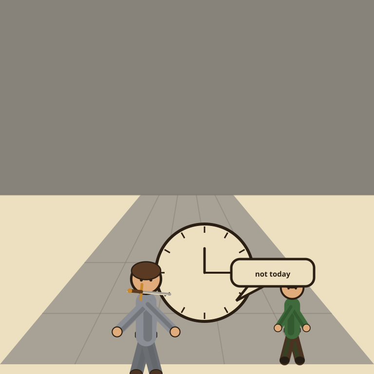

Reclaim.ai

The guard who stands between you and the next meeting was hired by you, to stop you.
Reclaim.ai is an AI calendar tool that auto-schedules habits, tasks, and focus time into the open gaps around your existing meetings, then reschedules them itself the moment something new collides. Lite, the free plan, covers one calendar sync and up to 5 AI-scheduled habits or tasks, genuinely usable for solo scheduling rather than a stripped trial. Starter, at $10/seat/month billed annually, unlocks unlimited tasks and habits plus integrations like Todoist and Asana. The verdict: one of the more generous free tiers among AI calendar tools, and the paid tiers stay cheap even as they scale.
Reclaim's entire job is protecting you from your own calendar, which means the tool you installed to defend your focus time will, with total confidence, move your lunch three separate times in one afternoon because someone else's meeting request outranked it.
- Value for price8.5/10
- Capability7/10
- Ease of use8/10
- Trial safety8.5/10
Reclaim differs from a standard scheduling link tool like Calendly by working on your own calendar instead of other people's booking flow: it takes habits, one-off tasks, and buffer time you define, then finds and defends real slots for them automatically, moving them itself when a new meeting lands on top. That auto-defense is the whole pitch, most calendar tools will let a recurring gym block get silently double-booked into oblivion, Reclaim treats it as a scheduling conflict to actively resolve.
Pricing breakdown
- Lite ($0, forever, 1 user): 1 calendar sync, up to 5 AI-scheduled habits/tasks, smart time blocking, basic buffer time
- Starter ($10/seat/mo billed annually, up to 10 seats): everything in Lite, plus unlimited tasks and habits, unlimited calendar syncs, integrations with Todoist, Asana, ClickUp, Jira, and Linear, team management
- Business ($15/seat/mo billed annually, up to 100 seats): everything in Starter, plus scheduling links with round-robin booking, branded booking pages, webhooks, scheduling up to 12 weeks out
- Enterprise ($22/seat/mo billed annually, 100+ seats): everything in Business, plus enterprise-grade admin, support, and security controls
Where it falls short
The free Lite plan's 5-habit cap and single calendar sync mean it stops being enough almost immediately for anyone juggling a work and personal calendar together, which is a common setup for a solo operator. The automatic rescheduling is also a trust exercise: the AI is deciding what gets bumped and when, and while it generally respects priority settings, watching your own calendar get rearranged by software takes some getting used to. It's also purely a scheduling layer, not a meeting notetaker or video tool, so it solves one specific problem rather than replacing your whole calendar stack.
Pros
- Free Lite plan is a real, permanent tier for one user, not a time-limited trial
- Automatically defends and reschedules habits and focus time when meetings collide
- Paid tiers stay cheap even as team size and integrations scale up
Cons
- Free plan's 5-habit cap and single calendar sync are limiting for anyone with multiple calendars
- Automatic rescheduling means giving up some manual control over your own calendar
- Purely a scheduling layer, no notetaking or video features of its own
Common questions
Is Reclaim.ai's free Lite plan actually usable long-term?
Yes, for a single user. Lite is free forever, not a time-limited trial, and includes smart time blocking, one calendar sync, and up to 5 AI-scheduled habits and tasks. It's a real plan, just capped for solo use rather than teams.
What actually happens when a new meeting collides with a scheduled habit?
Reclaim automatically moves the colliding habit or task to the next available slot that still fits its priority and deadline, rather than just leaving it on your calendar to be missed or requiring you to manually reschedule it yourself.
What do the paid plans add over the free Lite tier?
Starter ($10/seat/month annually) unlocks unlimited tasks and habits, unlimited calendar syncs, and integrations with tools like Todoist, Asana, and Linear. Business ($15/seat/month) adds scheduling links and webhooks for larger teams, and Enterprise ($22/seat/month) adds admin and security controls.